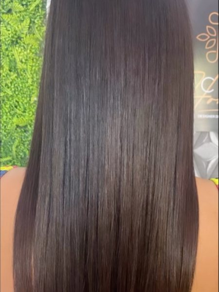
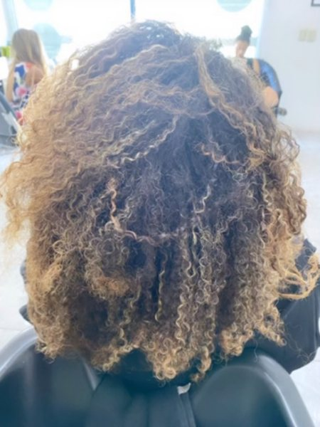
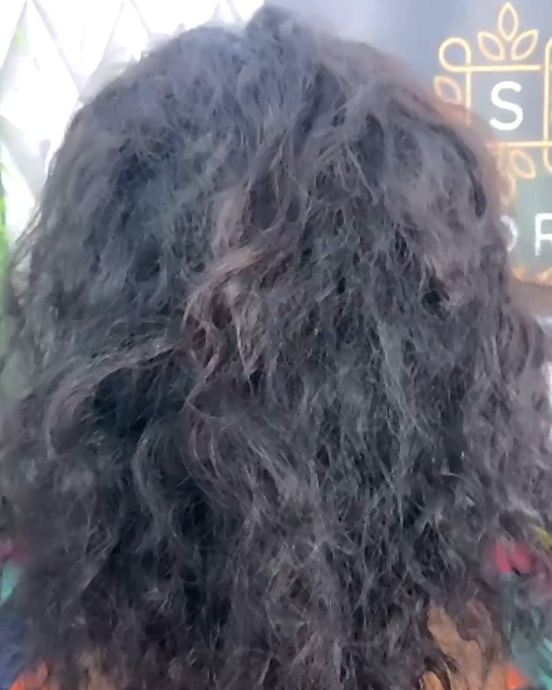
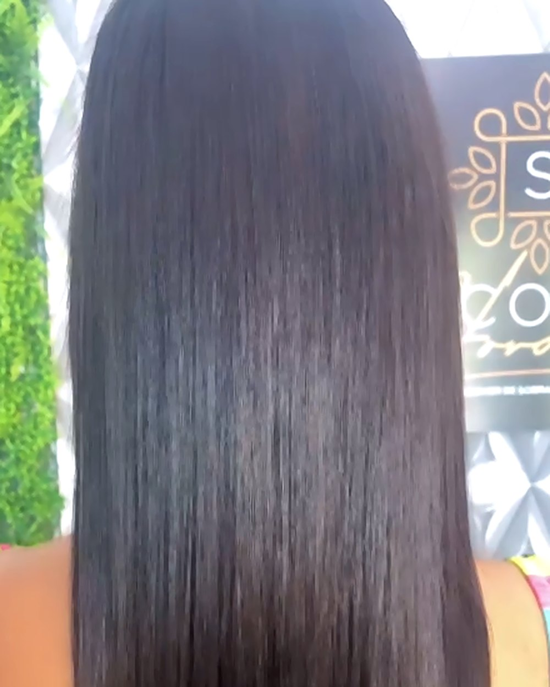
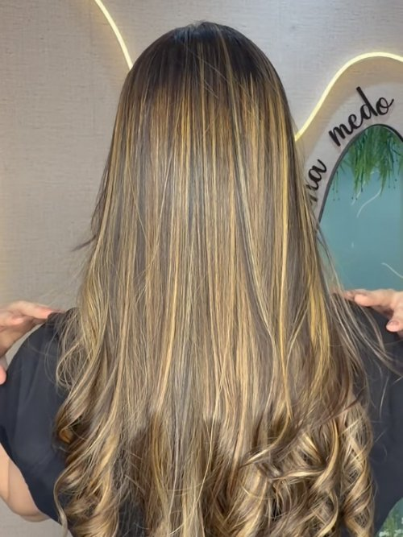

Cabeleireira em Macaé · Alisamento e restauração capilarA arte de cuidardos seus fios.
Progressiva sem formol, restauração capilar e coloração sob medida em Macaé, RJ. Cada atendimento começa pelo diagnóstico do seu cabelo e termina com brilho, força e a cor que você imaginou.
Transformando cabelos, realçando belezas.
Sou a Pollyany Pamella, cabeleireira em Macaé e especialista em alisamento e restauração capilar. Antes de qualquer química, eu escuto você: o tom que você imagina, a rotina que você tem e a história do seu cabelo.
Por isso cada coloração vem acompanhada de um plano de cuidado. O objetivo é sempre o mesmo: fios fortes, com brilho e sem quebra, do primeiro atendimento à manutenção.
Da cor ao liso perfeito.
Alisamentos, tratamentos e coloração em Macaé. Escolha um serviço para agendar. A mensagem chega com o nome do procedimento e eu respondo com horários e valores.
Progressiva sem formol
Liso absoluto, muito brilho e redução de volume, com segurança para os fios.
AlisamentoRealinhamento & botox
Adeus frizz e volume indesejado, mantendo movimento e maciez.
RestauraçãoRestauração capilar
Reconstrução pós-descoloração, hidratação intensa de banana e mel e cronograma capilar.
ColoraçãoMorena iluminada
Mechas sutis e luminosas sobre a base morena, com crescimento bonito.
ColoraçãoLoiros & loiro pérola
Clareamento técnico com tonalização para um loiro elegante e cheio de brilho.
ColoraçãoRuivos & correção de cor
Ruivo raposinha, cobre e correções para recuperar um tom bonito e uniforme.


Liso com saúde, sem formol.
O tratamento que mais me pedem. Ele combina alisamento sem formol e restauração da fibra para entregar um cabelo liso, leve e brilhante, sem sacrificar a saúde dos fios.
- i.Redução de volume e frizz desde a primeira sessão
- ii.Brilho intenso e toque macio
- iii.Protocolo de restauração para fios danificados ou descoloridos
- iv.Orientação de manutenção para o dia a dia


AntesDepoisArraste e veja a transformação.
Alisamento: redução de volume, fios alinhados e muito brilho. Cada resultado começa com um diagnóstico do fio, assim o cabelo chega onde você quer com saúde.
Resultados que falam por si.
Trabalhos reais feitos em clientes de Macaé e região.
Do primeiro contato ao espelho.
Conversa
Você manda uma mensagem com o serviço desejado, uma foto do seu cabelo hoje e uma referência do resultado.
Diagnóstico
Analiso o histórico dos fios, indico o procedimento ideal e passo o valor e o tempo de atendimento.
Transformação
No dia marcado, você recebe o atendimento completo e sai com as orientações para manter o resultado em casa.
Qual cuidado o seu cabelo pede hoje?
Só queria dar uma iluminada… obrigada por entender exatamente o que eu queria, você arrasou demais.May Pessanha · Morena iluminada · via Instagram
@pollyanyp_hair
Perguntas frequentes.
A progressiva tem formol?
Não. Trabalho com progressiva sem formol, que alisa, reduz o volume e deixa muito brilho, com mais segurança para você e para os fios.
Qual a diferença entre progressiva, realinhamento e botox?
A progressiva deixa o cabelo liso. O realinhamento e o botox reduzem frizz e volume, mas mantêm mais movimento. Na avaliação eu indico o que combina com o seu cabelo e com o resultado que você quer.
Meu cabelo está danificado. Posso fazer química?
Na maioria dos casos, sim, com planejamento. Como especialista em restauração capilar, posso começar com reconstrução ou cronograma para preparar os fios antes de alisar ou clarear.
Quanto tempo dura uma morena iluminada?
Por respeitar a raiz natural, o crescimento fica bonito e a manutenção pode ser feita com mais espaço entre as visitas. A tonalização ajuda a manter o brilho.
Como sei o valor do serviço?
O valor depende do comprimento, volume e histórico do cabelo. Mande uma foto pela mensagem e eu passo o orçamento.
Cabeleireira em Macaé, RJ.
Atendimento com hora marcada, no bairro Parque Aeroporto, em Macaé - RJ (próximo ao posto de saúde, ponto de esquina na cor cinza). Recebemos clientes de toda a cidade e região.
- Salão
- Endereço
- R. Simonides de Souza Vieira, 95 - Loja 1 · Macaé, RJ · CEP 27963-622
- Bairro
- Parque Aeroporto
- Ponto de referência
- Próximo ao posto de saúde, ponto de esquina na cor cinza
- Horários
- Atendemos clientes de

Seu próximo cabelo começa aqui.
Atendimento com hora marcada em Macaé. Envie uma mensagem e receba sua avaliação.